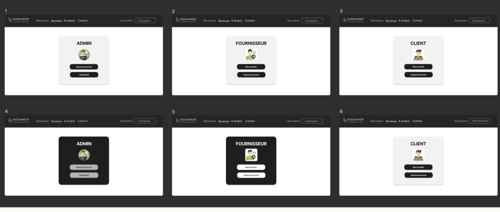
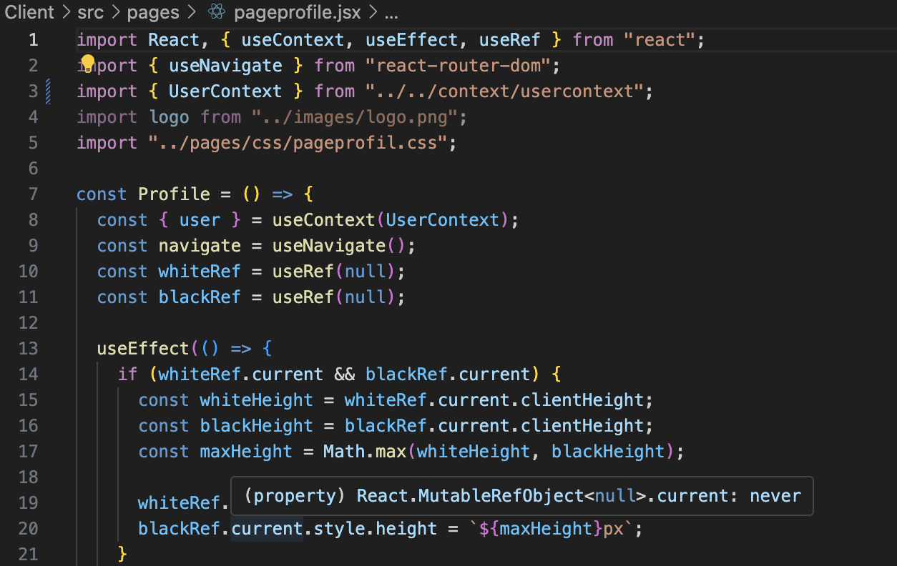
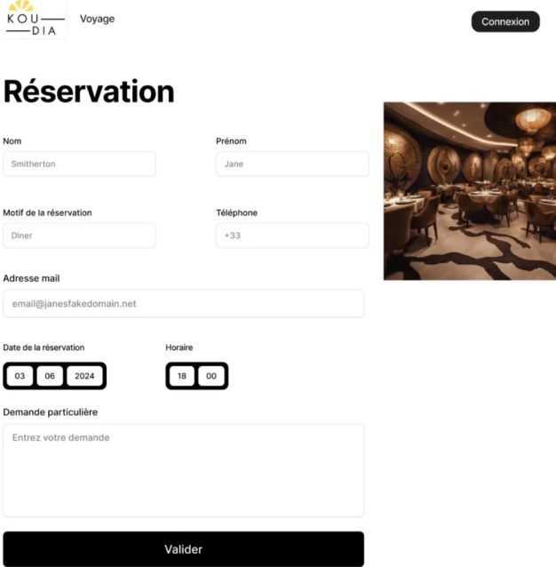
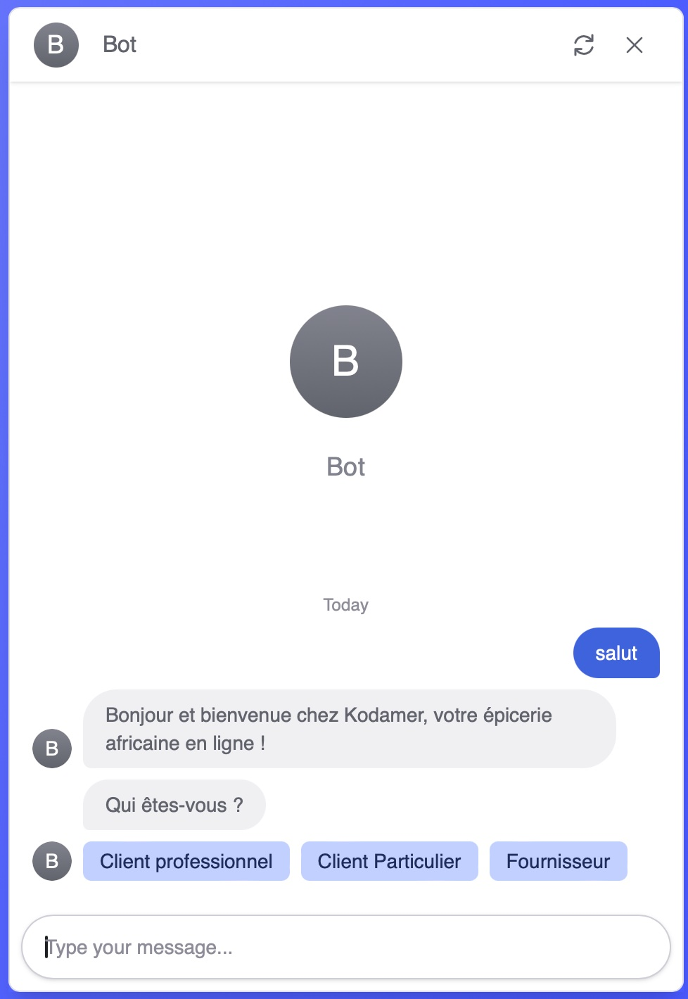

Expérience professionnelle — Stage BTS
Développement web et design d'interfaces pour une épicerie africaine en ligne et ses partenaires.
ReactNode.jsFigmaFront-endMaquette UI01 — L'entreprise
Kodamer est une jeune startup spécialisée dans la vente de produits d'épicerie fine africaine en ligne. Lauréate du Prix Épicures du Site Marchand de l'Année 2024, elle développe activement sa plateforme e-commerce. Durant mon stage, j'ai travaillé à la fois pour Kodamer et pour Koudia, une entreprise partenaire du même secteur.
02 — Mes missions
Développement front-end du site Kodamer
Aide la chef d’équipe à créer l'interface utilisateur du site en React. Optimisation des pages existantes, intégration de nouvelles fonctionnalités visuelles.
Maquette du site de réservation Koudia
Aide la chef d’équipe à créer l'interface utilisateur du site en React. Optimisation des pages existantes, intégration de nouvelles fonctionnalités visuelles.
Chatbot pour le service client Kodamer
Création d'un chatbot avec Botpress pour accompagner trois types d'utilisateurs : clients particuliers, clients professionnels et fournisseurs. Chaque profil bénéficie d'un parcours personnalisé.




03 — Ce que j'ai retenu
04 — Avec le recul